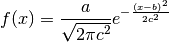
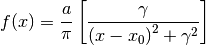

components Package¶
components Package¶
Components that can be used to define a model
There are some components that are only useful for one particular kind of signal and therefore their name are preceded by the signal name: eg. eels_cl_edge.
Writing a new template is really easy, just edit _template.py and maybe take a look to the other components.
_template Module¶
- class hyperspy.components._template.My_Component(parameter_1=1, parameter_2=2)¶
Bases: hyperspy.component.Component
Methods
__call__(p, x[, onlyfree]) charge(p[, p_std, onlyfree]) charge_value_from_map(indexes[, only_fixed]) create_arrays(shape) export([folder, format, save_std, only_free]) Plot the value of the parameters of the model function(x) This functions it too complicated to explain init_parameters(parameter_name_list) plot([only_free]) Plot the value of the parameters of the model set_axes(axes_manager) store_current_parameters_in_map(indexes) summary() update_number_parameters() - function(x)¶
This functions it too complicated to explain
bleasdale Module¶
- class hyperspy.components.bleasdale.Bleasdale¶
Bases: hyperspy.component.Component
Bleasdale function component.
f(x) = (a+b*x)^(-1/c)
Attributes
a Float b Float c Float Methods
__call__(p, x[, onlyfree]) charge(p[, p_std, onlyfree]) charge_value_from_map(indexes[, only_fixed]) create_arrays(shape) export([folder, format, save_std, only_free]) Plot the value of the parameters of the model function(x) grad_a(x) Returns d(function)/d(parameter_1) grad_b(x) Returns d(function)/d(parameter_1) grad_c(x) Returns d(function)/d(parameter_1) init_parameters(parameter_name_list) plot([only_free]) Plot the value of the parameters of the model set_axes(axes_manager) store_current_parameters_in_map(indexes) summary() update_number_parameters() - function(x)¶
- grad_a(x)¶
Returns d(function)/d(parameter_1)
- grad_b(x)¶
Returns d(function)/d(parameter_1)
- grad_c(x)¶
Returns d(function)/d(parameter_1)
eels_cl_edge Module¶
- class hyperspy.components.eels_cl_edge.EELSCLEdge(element_subshell, intensity=1.0, delta=0.0)¶
Bases: hyperspy.component.Component
EELS core loss ionisation edge.
This component reads the cross section from a folder specified in the GOS_directory parameter of the Preferences. It supports fitting a spline to the fine structure area of the ionisation edge.
Currently it only supports P. Rez Hartree Slater cross sections parametrised as distributed by Gatan in their Digital Micrograph software.
Methods
__call__(p, x[, onlyfree]) calculate_knots() charge(p[, p_std, onlyfree]) charge_value_from_map(indexes[, only_fixed]) create_arrays(shape) edge_position() export([folder, format, save_std, only_free]) Plot the value of the parameters of the model fslist_to_txt(filename) function(E) Calculates the number of counts in barns grad_delta(E) Calculates the number of counts in barns grad_intensity(E) init_parameters(parameter_name_list) integrategos([delta]) Calculates the knots of the spline interpolation of the cross section after integrating q. plot([only_free]) Plot the value of the parameters of the model readgosfile() set_axes(axes_manager) set_microscope_parameters(E0, alpha, beta, ...) setfslist() store_current_parameters_in_map(indexes) summary() txt_to_fslist(filename) update_number_parameters() - calculate_knots()¶
- edge_position()¶
- fs_emax¶
- fs_state¶
- fslist_to_txt(filename)¶
- function(E)¶
Calculates the number of counts in barns
- grad_delta(E)¶
Calculates the number of counts in barns
- grad_intensity(E)¶
- integrategos(delta=0)¶
Calculates the knots of the spline interpolation of the cross section after integrating q. It calculates it for Ek in the range (Ek-Ekrange,Ek+Ekrange) for optimizing the time of the fitting. For a value outside of the range it returns the closer limit, however this is not likely to happen in real data
- readgosfile()¶
- set_microscope_parameters(E0, alpha, beta, energy_scale)¶
- setfslist()¶
- txt_to_fslist(filename)¶
- hyperspy.components.eels_cl_edge.EffectiveAngle(E0, E, alpha, beta)¶
Calculates the effective collection angle
Parameters : E0 : float
incident energy in eV
E : float
energy loss in eV
alpha : float
convergence angle in mrad
beta : float
collection angle in mrad
Returns : float : effective collection angle
Notes
Code translated to Python from Egerton (second edition) page 420
eels_double_offset Module¶
- class hyperspy.components.eels_double_offset.DoubleOffset¶
Bases: hyperspy.component.Component
Given an array of the same shape as Spectrum energy_axis, returns it as a component that can be added to a model.
Methods
__call__(p, x[, onlyfree]) charge(p[, p_std, onlyfree]) charge_value_from_map(indexes[, only_fixed]) create_arrays(shape) export([folder, format, save_std, only_free]) Plot the value of the parameters of the model function(x) grad_offset(x) grad_step(x) init_parameters(parameter_name_list) plot([only_free]) Plot the value of the parameters of the model set_axes(axes_manager) store_current_parameters_in_map(indexes) summary() update_number_parameters() - function(x)¶
- grad_offset(x)¶
- grad_step(x)¶
eels_double_power_law Module¶
- class hyperspy.components.eels_double_power_law.DoublePowerLaw(A=1000000.0, r=3.0, origin=0.0)¶
Bases: hyperspy.component.Component
Methods
__call__(p, x[, onlyfree]) charge(p[, p_std, onlyfree]) charge_value_from_map(indexes[, only_fixed]) create_arrays(shape) export([folder, format, save_std, only_free]) Plot the value of the parameters of the model function(x) Given an one dimensional array x containing the energies at which grad_A(x) grad_origin(x) grad_r(x) grad_ratio(x) grad_shift(x) init_parameters(parameter_name_list) plot([only_free]) Plot the value of the parameters of the model set_axes(axes_manager) store_current_parameters_in_map(indexes) summary() update_number_parameters() - function(x)¶
Given an one dimensional array x containing the energies at which you want to evaluate the background model, returns the background model for the current parameters.
- grad_A(x)¶
- grad_origin(x)¶
- grad_r(x)¶
- grad_ratio(x)¶
- grad_shift(x)¶
eels_vignetting Module¶
- class hyperspy.components.eels_vignetting.Vignetting¶
Bases: hyperspy.component.Component
Model the vignetting of the lens with a cos^4 law multiplied by lines on the edges
Methods
__call__(p, x[, onlyfree]) charge(p[, p_std, onlyfree]) charge_value_from_map(indexes[, only_fixed]) create_arrays(shape) export([folder, format, save_std, only_free]) Plot the value of the parameters of the model fix_cos_vignetting() fix_side_vignetting() free_cos_vignetting() free_side_vignetting() function(x) init_parameters(parameter_name_list) plot([only_free]) Plot the value of the parameters of the model set_axes(axes_manager) store_current_parameters_in_map(indexes) summary() update_number_parameters() - fix_cos_vignetting()¶
- fix_side_vignetting()¶
- free_cos_vignetting()¶
- free_side_vignetting()¶
- function(x)¶
error_function Module¶
- class hyperspy.components.error_function.Erf¶
Bases: hyperspy.component.Component
Error function component
Attributes
A float sigma float origin float Methods
__call__(p, x[, onlyfree]) charge(p[, p_std, onlyfree]) charge_value_from_map(indexes[, only_fixed]) create_arrays(shape) export([folder, format, save_std, only_free]) Plot the value of the parameters of the model function(x) grad_A(x) grad_origin(x) grad_sigma(x) init_parameters(parameter_name_list) plot([only_free]) Plot the value of the parameters of the model set_axes(axes_manager) store_current_parameters_in_map(indexes) summary() update_number_parameters() - function(x)¶
- grad_A(x)¶
- grad_origin(x)¶
- grad_sigma(x)¶
exponential Module¶
- class hyperspy.components.exponential.Exponential¶
Bases: hyperspy.component.Component
Exponentian function components
f(x) = A*e^{-x/k}
Parameter Attribute A A k tau Methods
__call__(p, x[, onlyfree]) charge(p[, p_std, onlyfree]) charge_value_from_map(indexes[, only_fixed]) create_arrays(shape) export([folder, format, save_std, only_free]) Plot the value of the parameters of the model function(x) grad_A(x) grad_tau(x) init_parameters(parameter_name_list) plot([only_free]) Plot the value of the parameters of the model set_axes(axes_manager) store_current_parameters_in_map(indexes) summary() update_number_parameters() - function(x)¶
- grad_A(x)¶
- grad_tau(x)¶
gaussian Module¶
- class hyperspy.components.gaussian.Gaussian(A=1.0, sigma=1.0, centre=0.0)¶
Bases: hyperspy.component.Component
Normalized gaussian function component

Parameter Attribute a A b centre c sigma Methods
__call__(p, x[, onlyfree]) charge(p[, p_std, onlyfree]) charge_value_from_map(indexes[, only_fixed]) create_arrays(shape) estimate_parameters(signal, E1, E2[, ...]) Estimate the gaussian by calculating the momenta. export([folder, format, save_std, only_free]) Plot the value of the parameters of the model function(x) grad_A(x) grad_centre(x) grad_sigma(x) init_parameters(parameter_name_list) plot([only_free]) Plot the value of the parameters of the model set_axes(axes_manager) store_current_parameters_in_map(indexes) summary() update_number_parameters() - estimate_parameters(signal, E1, E2, only_current=False)¶
Estimate the gaussian by calculating the momenta.
Parameters : signal : Signal instance
x1 : float
Defines the left limit of the spectral range to use for the estimation.
x2 : float
Defines the right limit of the spectral range to use for the estimation.
only_current : bool
If False estimates the parameters for the full dataset.
Returns : bool :
Notes
Adapted from http://www.scipy.org/Cookbook/FittingData
- function(x)¶
- grad_A(x)¶
- grad_centre(x)¶
- grad_sigma(x)¶
logistic Module¶
- class hyperspy.components.logistic.Logistic¶
Bases: hyperspy.component.Component
Logistic function component
f(x) = a/(1+b*exp(-c*(x-origin)))
Attributes
a Float b Float c Float origin Float Methods
__call__(p, x[, onlyfree]) charge(p[, p_std, onlyfree]) charge_value_from_map(indexes[, only_fixed]) create_arrays(shape) export([folder, format, save_std, only_free]) Plot the value of the parameters of the model function(x) grad_a(x) Returns d(function)/d(parameter_1) grad_b(x) Returns d(function)/d(parameter_1) grad_c(x) Returns d(function)/d(parameter_1) grad_origin(x) Returns d(function)/d(parameter_1) init_parameters(parameter_name_list) plot([only_free]) Plot the value of the parameters of the model set_axes(axes_manager) store_current_parameters_in_map(indexes) summary() update_number_parameters() - function(x)¶
- grad_a(x)¶
Returns d(function)/d(parameter_1)
- grad_b(x)¶
Returns d(function)/d(parameter_1)
- grad_c(x)¶
Returns d(function)/d(parameter_1)
- grad_origin(x)¶
Returns d(function)/d(parameter_1)
lorentzian Module¶
- class hyperspy.components.lorentzian.Lorentzian(A=1.0, gamma=1.0, centre=0.0)¶
Bases: hyperspy.component.Component
Cauchy-Lorentz distribution (a.k.a. Lorentzian function) component

Parameter Attribute a A gamma gamma x0 centre Methods
__call__(p, x[, onlyfree]) charge(p[, p_std, onlyfree]) charge_value_from_map(indexes[, only_fixed]) create_arrays(shape) export([folder, format, save_std, only_free]) Plot the value of the parameters of the model function(x) grad_A(x) grad_centre(x) grad_gamma(x) init_parameters(parameter_name_list) plot([only_free]) Plot the value of the parameters of the model set_axes(axes_manager) store_current_parameters_in_map(indexes) summary() update_number_parameters() - function(x)¶
- grad_A(x)¶
- grad_centre(x)¶
- grad_gamma(x)¶
offset Module¶
- class hyperspy.components.offset.Offset(offset=0.0)¶
Bases: hyperspy.component.Component
Component to add a constant value in the y-axis
f(x) = k + x
Parameter Attribute k offset Methods
__call__(p, x[, onlyfree]) charge(p[, p_std, onlyfree]) charge_value_from_map(indexes[, only_fixed]) create_arrays(shape) estimate_parameters(signal, x1, x2[, ...]) Estimate the parameters by the two area method export([folder, format, save_std, only_free]) Plot the value of the parameters of the model function(x) grad_offset(x) init_parameters(parameter_name_list) plot([only_free]) Plot the value of the parameters of the model set_axes(axes_manager) store_current_parameters_in_map(indexes) summary() update_number_parameters() - estimate_parameters(signal, x1, x2, only_current=False)¶
Estimate the parameters by the two area method
Parameters : signal : Signal instance
x1 : float
Defines the left limit of the spectral range to use for the estimation.
x2 : float
Defines the right limit of the spectral range to use for the estimation.
only_current : bool
If False estimates the parameters for the full dataset.
Returns : bool :
- function(x)¶
- grad_offset(x)¶
pes_gaussian Module¶
- class hyperspy.components.pes_gaussian.Gaussian4SEM(A=1.0, FWHM=1.0, origin=0.0)¶
Bases: hyperspy.component.Component
Methods
__call__(p, x[, onlyfree]) charge(p[, p_std, onlyfree]) charge_value_from_map(indexes[, only_fixed]) create_arrays(shape) export([folder, format, save_std, only_free]) Plot the value of the parameters of the model function(x) Given an one dimensional array x containing the energies at which grad_A(x) grad_FWHM(x) grad_ab(x) grad_origin(x) init_parameters(parameter_name_list) plot([only_free]) Plot the value of the parameters of the model set_axes(axes_manager) store_current_parameters_in_map(indexes) summary() update_number_parameters() - function(x)¶
Given an one dimensional array x containing the energies at which you want to evaluate the background model, returns the background model for the current parameters.
- grad_A(x)¶
- grad_FWHM(x)¶
- grad_ab(x)¶
- grad_origin(x)¶
pes_see Module¶
- class hyperspy.components.pes_see.SEE(A=1.0, Phi=1.0, B=0.0, sigma=0)¶
Bases: hyperspy.component.Component
Secondary electron emission component for Photoemission Spectroscopy
Attributes
A float Phi float B float sigma float Resolution parameter. Methods
__call__(p, x[, onlyfree]) charge(p[, p_std, onlyfree]) charge_value_from_map(indexes[, only_fixed]) create_arrays(shape) export([folder, format, save_std, only_free]) Plot the value of the parameters of the model function(x) grad_A(x) grad_B(x) grad_Phi(x) grad_sigma(x) init_parameters(parameter_name_list) plot([only_free]) Plot the value of the parameters of the model set_axes(axes_manager) store_current_parameters_in_map(indexes) summary() update_number_parameters() - function(x)¶
- grad_A(x)¶
- grad_B(x)¶
- grad_Phi(x)¶
- grad_sigma(x)¶
polynomial Module¶
- class hyperspy.components.polynomial.Polynomial(order=2)¶
Bases: hyperspy.component.Component
n-order polynomial component.
Polynomial component defined by the coefficients parameters which is an array of len the order of the polynomial.
For example, the [1,2,3] coefficients define the following 3rd order polynomial: f(x) = 1x² + 2x + 3
Attributes
coeffcients array Methods
__call__(p, x[, onlyfree]) charge(p[, p_std, onlyfree]) charge_value_from_map(indexes[, only_fixed]) compute_grad_coefficients() create_arrays(shape) estimate_parameters(signal, x1, x2[, ...]) Estimate the parameters by the two area method export([folder, format, save_std, only_free]) Plot the value of the parameters of the model function(x) get_polynomial_order() grad_coefficients(x) init_parameters(parameter_name_list) plot([only_free]) Plot the value of the parameters of the model set_axes(axes_manager) store_current_parameters_in_map(indexes) summary() update_number_parameters() - compute_grad_coefficients()¶
- estimate_parameters(signal, x1, x2, only_current=False)¶
Estimate the parameters by the two area method
Parameters : signal : Signal instance
x1 : float
Defines the left limit of the spectral range to use for the estimation.
x2 : float
Defines the right limit of the spectral range to use for the estimation.
only_current : bool
If False estimates the parameters for the full dataset.
Returns : bool :
- function(x)¶
- get_polynomial_order()¶
- grad_coefficients(x)¶
- hyperspy.components.polynomial.ordinal(value)¶
Converts zero or a postive integer (or their string representations) to an ordinal value.
>>> for i in range(1,13): ... ordinal(i) ... u'1st' u'2nd' u'3rd' u'4th' u'5th' u'6th' u'7th' u'8th' u'9th' u'10th' u'11th' u'12th'
>>> for i in (100, '111', '112',1011): ... ordinal(i) ... u'100th' u'111th' u'112th' u'1011th'
Notes
Author: Serdar Tumgoren http://code.activestate.com/recipes/576888-format-a-number-as-an-ordinal/ MIT license
power_law Module¶
- class hyperspy.components.power_law.PowerLaw(A=1000000.0, r=3.0, origin=0.0)¶
Bases: hyperspy.component.Component
Power law component
f(x) = A*(x-x0)^-r
Parameter Attribute A A r r x0 origin The left_cutoff parameter can be used to set a lower threshold from which the component will return 0.
Methods
__call__(p, x[, onlyfree]) charge(p[, p_std, onlyfree]) charge_value_from_map(indexes[, only_fixed]) create_arrays(shape) estimate_parameters(signal, x1, x2[, ...]) Estimate the parameters by the two area method export([folder, format, save_std, only_free]) Plot the value of the parameters of the model function(x) grad_A(x) grad_origin(x) grad_r(x) init_parameters(parameter_name_list) plot([only_free]) Plot the value of the parameters of the model set_axes(axes_manager) store_current_parameters_in_map(indexes) summary() update_number_parameters() - estimate_parameters(signal, x1, x2, only_current=False)¶
Estimate the parameters by the two area method
Parameters : signal : Signal instance
x1 : float
Defines the left limit of the spectral range to use for the estimation.
x2 : float
Defines the right limit of the spectral range to use for the estimation.
only_current : bool
If False estimates the parameters for the full dataset.
Returns : bool :
- function(x)¶
- grad_A(x)¶
- grad_origin(x)¶
- grad_r(x)¶
rc Module¶
- class hyperspy.components.rc.RC(V=1, V0=0, tau=1.0)¶
Bases: hyperspy.component.Component
Methods
__call__(p, x[, onlyfree]) charge(p[, p_std, onlyfree]) charge_value_from_map(indexes[, only_fixed]) create_arrays(shape) export([folder, format, save_std, only_free]) Plot the value of the parameters of the model function(x) init_parameters(parameter_name_list) plot([only_free]) Plot the value of the parameters of the model set_axes(axes_manager) store_current_parameters_in_map(indexes) summary() update_number_parameters() - function(x)¶
scalable_fixed_pattern Module¶
- class hyperspy.components.scalable_fixed_pattern.ScalableFixedPattern(spectrum)¶
Bases: hyperspy.component.Component
Fixed pattern component with interpolation support.
f(x) = a*s(b*x-x0) + cParameter Attribute a yscale b xscale c offset x0 shift The fixed pattern is defined by a single spectrum which must be provided to the ScalableFixedPattern constructor, e.g.:
In [1]: s = load('my_spectrum.hdf5') In [2] : my_fixed_pattern = components.ScalableFixedPattern(s))Attributes
a Float b Float shift Float offset Float interpolate Bool If False no interpolation is performed and only a y-scaled spectrum is returned. Methods
prepare_interpolator([kind, fill_value]) Prepare interpolation. - function(x)¶
- prepare_interpolator(kind='linear', fill_value=0, **kwargs)¶
Prepare interpolation.
Parameters : x : array
The spectral axis of the fixed pattern
kind: str or int, optional :
Specifies the kind of interpolation as a string (‘linear’,’nearest’, ‘zero’, ‘slinear’, ‘quadratic, ‘cubic’) or as an integer specifying the order of the spline interpolator to use. Default is ‘linear’.
fill_value : float, optional
If provided, then this value will be used to fill in for requested points outside of the data range. If not provided, then the default is NaN.
Notes
Any extra keyword argument is passed to scipy.interpolate.interp1d
spline Module¶
- class hyperspy.components.spline.Spline(tck)¶
Bases: hyperspy.component.Component
Methods
__call__(p, x[, onlyfree]) charge(p[, p_std, onlyfree]) charge_value_from_map(indexes[, only_fixed]) create_arrays(shape) export([folder, format, save_std, only_free]) Plot the value of the parameters of the model function(x) init_parameters(parameter_name_list) plot([only_free]) Plot the value of the parameters of the model set_axes(axes_manager) store_current_parameters_in_map(indexes) summary() update_number_parameters() - function(x)¶
voigt Module¶
- class hyperspy.components.voigt.Voigt¶
Bases: hyperspy.component.Component
Voigt profile component with support for shirley background, non_isochromaticity,transmission_function corrections and spin orbit splitting specially suited for Photoemission spectroscopy data analysis.
f(x) = G(x)*L(x) where G(x) is the Gaussian function and L(x) is the Lorentzian function
Attributes
area Parameter origin: Parameter FWHM Parameter gamma Parameter resolution Parameter shirley_background Parameter non_isochromaticity Parameter transmission_function Parameter spin_orbit_splitting Bool spin_orbit_branching_ratio float spin_orbit_splitting_energy float Methods
__call__(p, x[, onlyfree]) charge(p[, p_std, onlyfree]) charge_value_from_map(indexes[, only_fixed]) create_arrays(shape) export([folder, format, save_std, only_free]) Plot the value of the parameters of the model function(x) init_parameters(parameter_name_list) plot([only_free]) Plot the value of the parameters of the model set_axes(axes_manager) store_current_parameters_in_map(indexes) summary() update_number_parameters() - function(x)¶
- hyperspy.components.voigt.voigt(x, FWHM=1, gamma=1, center=0, scale=1)¶
Voigt peak.
The voigt peak is the convolution of a Lorentz peak with a Gaussian peak.
The formula used to calculate this is:
z(x) = (x + 1j gamma) / (sqrt(2) sigma) w(z) = exp(-z**2) erfc(-1j z) / (sqrt(2 pi) sigma) V(x) = scale Re(w(z(x-center)))
Parameters : - gamma : real
The half-width half-maximum of the Lorentzian
- FWHM : real
The FWHM of the Gaussian
- center : real
Location of the center of the peak
- scale : real
Value at the highest point of the peak
Ref: W.I.F. David, J. Appl. Cryst. (1986). 19, 63-64
Note: adjusted to use stddev and HWHM rather than FWHM parameters

Table Of Contents
- components Package
- components Package
- _template Module
- bleasdale Module
- eels_cl_edge Module
- eels_double_offset Module
- eels_double_power_law Module
- eels_vignetting Module
- error_function Module
- exponential Module
- gaussian Module
- logistic Module
- lorentzian Module
- offset Module
- pes_gaussian Module
- pes_see Module
- polynomial Module
- power_law Module
- rc Module
- scalable_fixed_pattern Module
- spline Module
- voigt Module